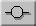

There is now an open switch in the circuit. Select the switch by clicking first on the Select Tool and then on the switch. The system will then display information about the switch. Deselect the Open Switch Button. This will close the switch.
When the switch is closed, there will be a current in the circuit, the ammeter will display its value as 1.2 A, and the voltmeter will display the voltage across the resistor as 12.0 V.
Now insert a light bulb into the circuit between the battery and the resistor. To do so, select the Light Bulb Tool (circuit symbol: ) and then click on the wire segment where you want to insert the bulb. When done, there will be a bulb in the circuit glowing yellow. (This is assuming the switch is closed. If the switch is open, the bulb should not light up.)